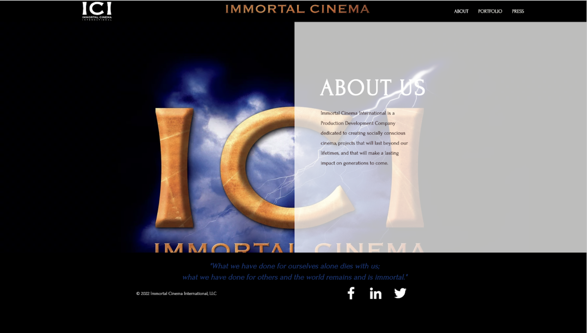

Overview
As the web design intern for the summer of 2022, I worked remotely to completely edit the pages of Immortal Cinema International's (ICI) website. Using WIX and programs such as Adobe Photoshop, the website was revised and film covers were edited to have a more appealing visual that encapsulated the video following.
- Web Design
- Graphic Design
Roles:
- June 4 2022 - July 31 2022
Timeline:
UI Design
Home Page
The goal of this redesign was that every page has the same color theme and content with improvements in readability and design.
To improve readability and user interaction, the nav bar was lengthened and formatted with larger text. Throughout the two months of my internship, this page went through several edits, being the first page to edit and the last page to finish. It was important to display the image of the company on the home page. Final edits included a large gif of the ICI logo followed by thumbnails of video trailers.

About Page
To improve readability and design, the quote and about us section was split into up and down sections instead of side-by-side sections to make the quote more of the focal point and on top of the ICI logo.
Original About
Portfolio Page
In editing this page I added a PORTFOLIO heading to the page so users would know their location on the site. The button style and placement were edited, as originally the placement didn’t correspond to the video it was for. In changing the button style I tried to match the theme of the page. Another adjustment was made to the location of the IMDb image link so it was centered in the last box on the black background.

Press Page
In editing this page I added a PRESS heading to the page so users would know their location on the site. The section heading style and placement were edited, as was the background of the page. Each image was also adjusted to fit once in each square and to capture the entire image instead of cutting off important sections. All fonts were edited to match the website theme and improve readability.
Clients Page
This page gained multiple additions including a heading and several clients that were not included on the original page. This page was also ordered alphabetically and arranged in rows of 9 to make it easier for users to follow.
Contact Page
This page didn't need many edits, however, to make the contact form stand out more the opacity of the ICI logo was decreased. The contact form was also moved down in order to not be very close to the nav bar.
Results & Takeaways
Through meticulous planning, innovative design choices, and a user-centric approach, I successfully transformed the outdated website into a sleek and highly functional platform. The revamped website showcased improved aesthetics, enhanced user experience, and seamless navigation. The final product effectively conveyed the company's brand identity and values. The project provided valuable takeaways, such as the importance of collaboration with colleagues expressing different design decisions, incorporating user feedback, and staying up-to-date with current design trends and best practices. This experience has undoubtedly strengthened my skills and confidence as a web designer, equipping me with the ability to tackle future design challenges with creativity and proficiency.